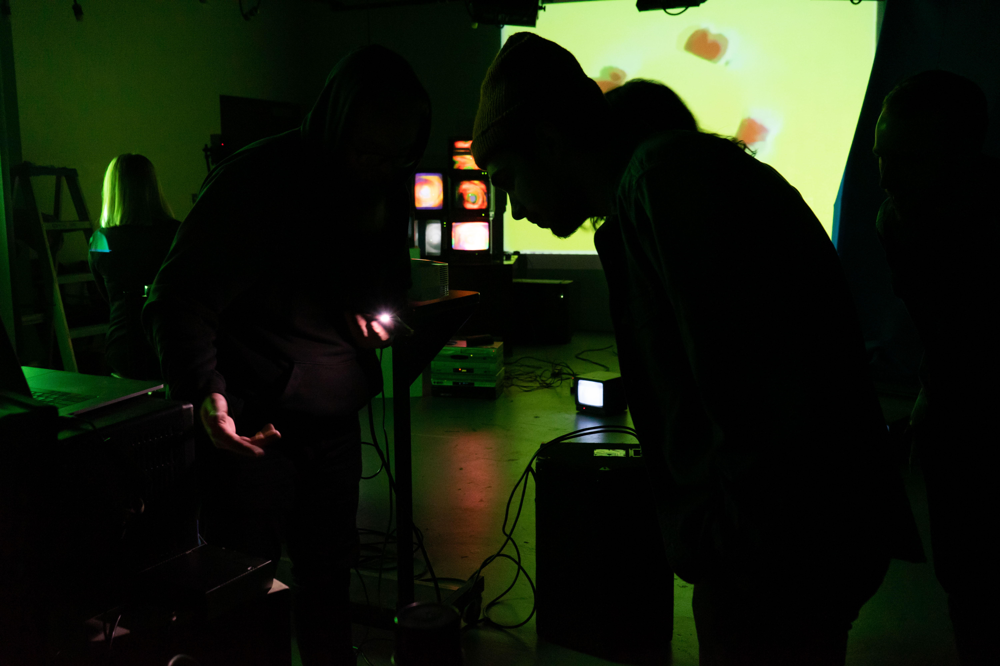
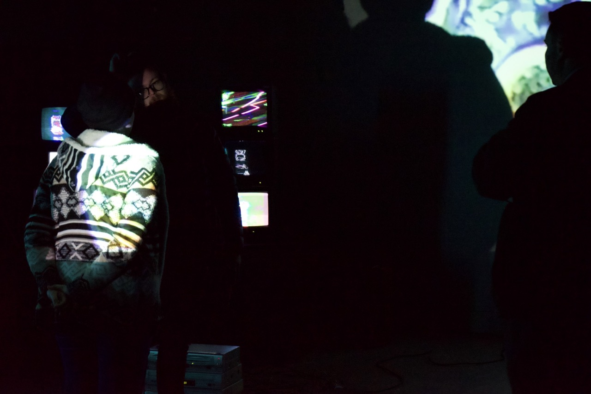
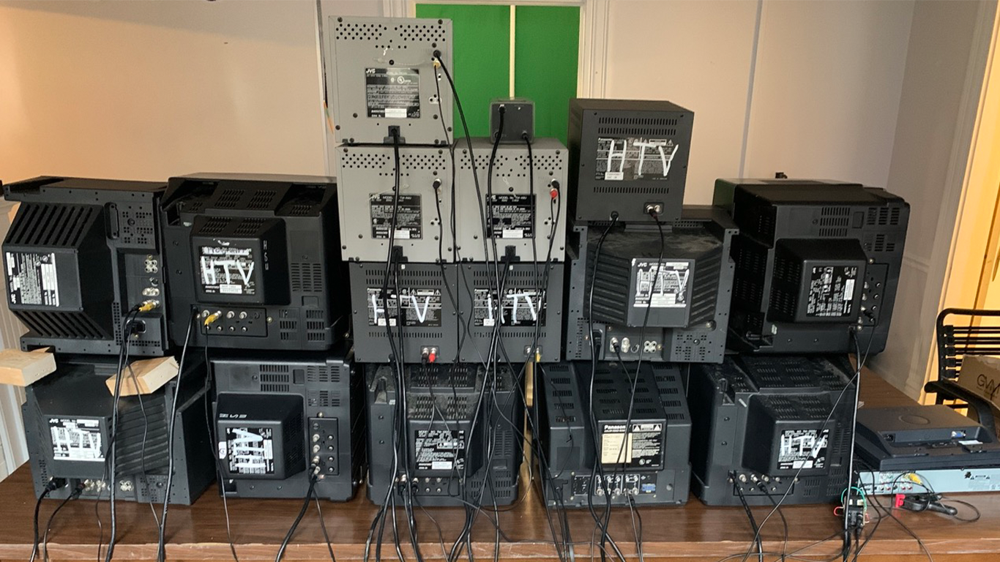
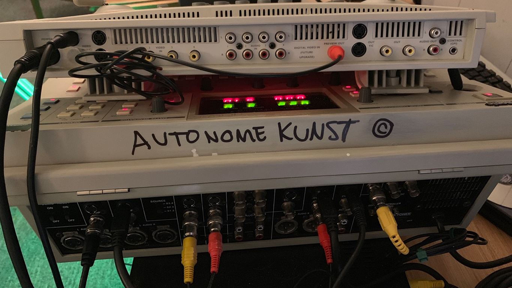

An immersive video installation investigating autonomous art generation and the evolving role of human creators. This undergraduate thesis project at Henderson State University transformed a gallery space using 19 cathode-ray tube televisions and studio monitors arranged in formations inspired by Nam June Paik's pioneering video sculptures.
Autonome Kunst
Video Art
2020
Objects

Technical Implementation
The installation featured analog feedback loops generated by custom circuit-bent artifacts, creating continuously evolving visual patterns across the CRT displays. A projector cast additional video loops onto the surrounding walls, while a DIY audio transducer converted raw video signals into harsh, mechanical sounds—preserving what could be interpreted as the "voice of the machine." Recorded eurorack synthesizer compositions layered beneath this grinding electronic noise, creating an intentionally uncomfortable sonic environment at high volume.

Conceptual Framework
The resulting experience was deliberately abrasive and mechanical, challenging viewers' comfort while questioning whether the installation existed primarily for human appreciation or as an autonomous system generating art for its own algorithmic satisfaction. The work explored themes of machine agency and the boundaries between human-directed and self-generating creative processes.

